Closed Won Value attributed to product trial activity in Q3 FY25
Flagship Case Study
Re-Architecting the Red Hat Product Trial Ecosystem
Transforming a fragmented evaluation experience into a scalable self-service platform supporting enterprise buyers, cloud marketplace users, and technical evaluators across the Red Hat portfolio.
Opportunity value generated by sales-assisted product trials in Q1 FY26
Year-over-Year increase in OpenShift Developer Sandbox visits

Year-over-Year increase in visits for OpenShift Developer Sandbox
Increase in activations for OpenShift Developer Sandbox
Opportunity value generated by sales-assisted product trials in Q1 FY26
Closed Won Value attributed to product trial activity in Q3 FY25
Project Overview
From scattered trial paths to a connected acquisition platform.
Red Hat Product Trials (RHPT) serves as the primary evaluation and acquisition platform for products including OpenShift, Red Hat Enterprise Linux, Ansible, and cloud-native services.
The ecosystem supports multiple acquisition channels including self-service product trials, sales-assisted evaluations, AWS Marketplace deployments, and enterprise subscription evaluations.
As adoption expanded, the platform accumulated significant operational complexity, fragmented activation journeys, and limited visibility into user behavior across systems.
My role was to redesign the end-to-end onboarding, activation, subscription management, and trial lifecycle experience while improving telemetry, reducing friction, and increasing conversion efficiency.
Role & Responsibilities
Strategy, architecture, dashboard design, governance, and cross-functional leadership.
Principal UX Product Designer
Product Strategy
Experience Architecture
Dashboard Design
Subscription Management
Cross-Functional Leadership
Design Systems Governance
Marketplace Experience Design
Analytics & Optimization
Partners: Product Management, UX Research, Digital Analytics, Design Engineering, Cloud Operations, IT Engineering, and Global Sales Teams.
The Challenge
The product trial ecosystem evolved across numerous disconnected systems and acquisition channels.
This resulted in significant friction for both customers and internal stakeholders.
Customer Challenges
- Complex onboarding journeys
- Multiple authentication handoffs
- Fragmented activation experiences
- Poor subscription visibility
- Limited lifecycle management
Business Challenges
- Disconnected systems
- Manual sales workflows
- Limited telemetry
- Slow publishing processes
- Fragmented ownership across teams
The most significant issue emerged within AWS Marketplace activation workflows where users successfully authenticated through Red Hat SSO but encountered a hidden permissions barrier requiring elevated AWS IAM administrative privileges.
Customers demonstrated strong intent but failed before completing activation.
Discovery & Systems Mapping
Mapping the complete request-to-activation ecosystem revealed the real work.
The first phase focused on understanding the complete request-to-activation ecosystem.
I mapped workflows spanning:
- Red Hat Sales Cloud
- Salesforce
- Alfresco
- Zendesk
- HOCK Application
- AWS Marketplace
- Red Hat Trial Services
The resulting architecture exposed multiple manual handoffs, duplicated processes, and disconnected telemetry streams that slowed activation and obscured customer behavior.
Research Evidence
The source research showed where users needed continuity, visibility, and clearer buying paths.
Modal comprehension gap
Participants expected Explore Now content to be currently visible and did not realize the opened modal had more scrollable content.
My Trials home page validation
General responses complimented the My Trials home page, indicating that the layout and architecture were intuitive, usable, and meeting user needs.
Purchase preference split
Customers preferred self-service marketplace options for smaller purchases, but enterprise users with larger accounts preferred contacting sales for personalized service.
Critical Insight
The problem was not customer intent. The problem was system design.
Analytics revealed a 1,467% increase in users initiating AWS Marketplace provisioning but failing before subscription completion due to enterprise IAM permission restrictions.
Entry channels
Product Trial Center, AWS Marketplace, and sales-assisted requests captured evaluation intent.
Activation core
Red Hat SSO and Trial Services carried users into provisioning, where hidden IAM permissions blocked completion.
Lifecycle visibility
My Trials, observability, shared components, and Sales Cloud routing made trial state and follow-up visible.
Failure signal
Telemetry exposed marketplace provisioning starts that failed before subscription completion.
Intent
Customers were not casually browsing. They were starting real provisioning workflows.
The funnel showed strong activation intent before the experience crossed into identity, marketplace, and permission systems.
Reimagining the Trial Experience
A redesigned experience model brought onboarding, routing, lifecycle management, and state clarity into one coherent system.
Simplified Activation
Embedded registration directly into trial entry experiences, collapsing authentication and activation into a streamlined onboarding flow.
Intelligent Routing
Redesigned TryIt SPA routing logic using application state flags to bypass unnecessary screens and route authenticated users directly into activation workflows.
Subscription Lifecycle Management
Designed and launched the My Trials dashboard.
The dashboard became the centralized command center for:
- Active trials
- Expired trials
- Subscription status
- Remaining evaluation time
- Renewal eligibility
- Purchase readiness
Visual State Management
Introduced highly visible lifecycle indicators including:
- Days Remaining progress indicators
- Expiration states
- Activation eligibility messaging
- Subscription health indicators
Dashboard System
My Trials became the centralized command center.
Source research positioned My Trials as the authenticated experience for active or expired trial subscriptions, post-activation redirects, Product Trial Center CTAs, and the My Red Hat authenticated drawer.
OpenShift
18 days remainingRHEL
Ready to activate EligibleAnsible
Expired trial Renewal pathMarketplace
Provisioning review AWS IAM requiredExplore Now
Content visible Tooltip clarityRecommendations
Personalized next step Requested enhancementEnterprise Purchasing Paths
Research revealed meaningful differences between SMB and enterprise procurement behavior.
A single conversion path could not effectively support both audiences.
To address this, I redesigned the purchase experience around two distinct pathways:
- Purchase Online — Marketplace-driven self-service transactions
- Contact Sales — Enterprise procurement and licensing engagement
This reduced ambiguity while improving lead qualification and conversion efficiency.
Technical Collaboration
Modernizing the system required design, engineering, analytics, and publishing changes moving together.
Publishing Modernization
Partnered with engineering teams to transition from hardcoded HTML trial center experiences to Drupal 10 Layout Builder architecture.
This reduced publishing dependencies and significantly improved release velocity.
Shared Component Library
Collaborated with Design Engineering on implementation of the federated @rhpt/elements component library.
This established a consistent UI foundation across the trial ecosystem and improved governance at scale.
Observability Improvements
Integrated Sentry monitoring to capture:
- Application failures
- API timeout events
- Browser-specific issues
- Activation edge cases
Outcomes
Business impact landed across developer adoption, marketplace completion, sales-assisted demand, and revenue.
OpenShift Developer Sandbox
- 144% Year-over-Year increase in visits
- 44% increase in activations
AWS Marketplace
- 1,081 Start Trial conversions
- 51% successful completion of SSO return and provisioning workflow
Sales-Assisted Product Trials
- 505 submitted requests
- 400 approved requests
- 188 unique opportunities
- $20.5M opportunity value generated in Q1 FY26
Revenue Impact
- 51 closed-won opportunities in Q1 FY26
- $7.3M closed-won value in Q1 FY26
- $39.5M Closed Won Value attributed to product trial activity in Q3 FY25
Organizational Impact
The redesigned ecosystem delivered more than improved user experiences.
Integrated dashboards equipped product, sales, and leadership teams with actionable visibility into customer behavior and activation performance.
The initiative improved lead routing efficiency, increased operational visibility, and helped establish a unified enterprise design standard through shared components and governance.
Reflection
Customer acquisition challenges rarely exist within a single interface.
This project reinforced that customer acquisition challenges rarely exist within a single interface.
The largest opportunities often emerge at the intersection of products, systems, teams, and business processes.
Success required balancing customer experience, marketplace integrations, enterprise procurement models, technical constraints, and organizational alignment.
The resulting platform created a scalable foundation for future growth while helping shift the organization toward frictionless cloud-native acquisition experiences.